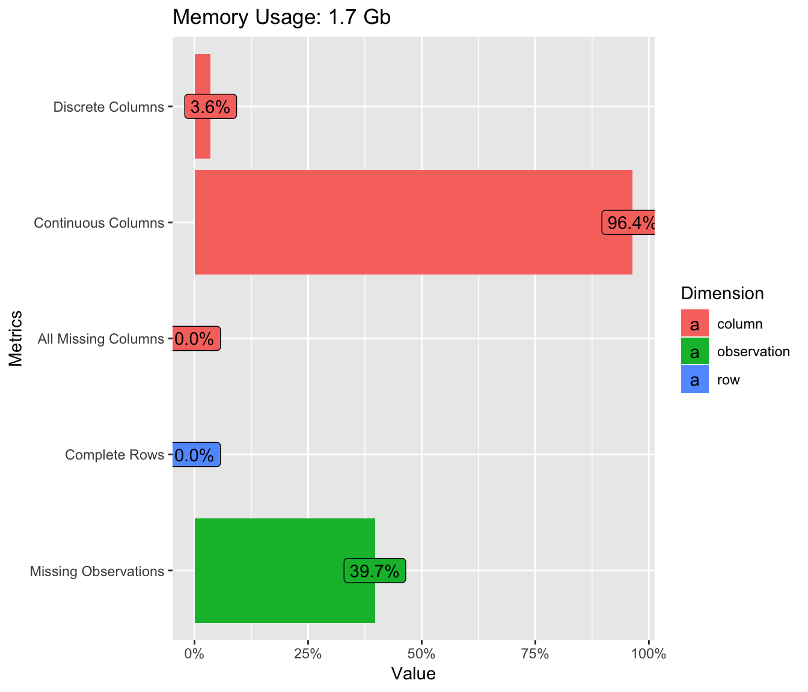
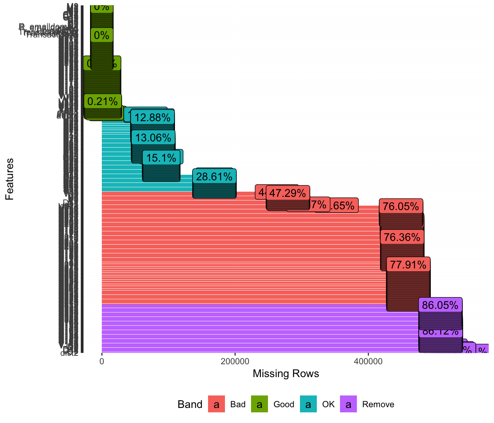
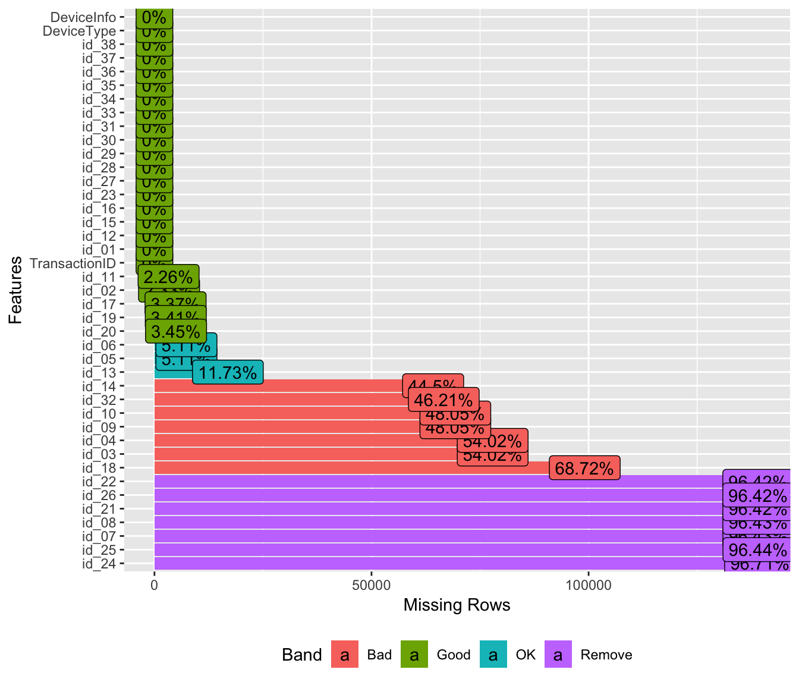
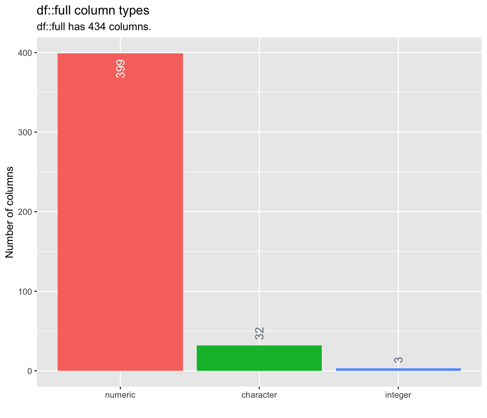
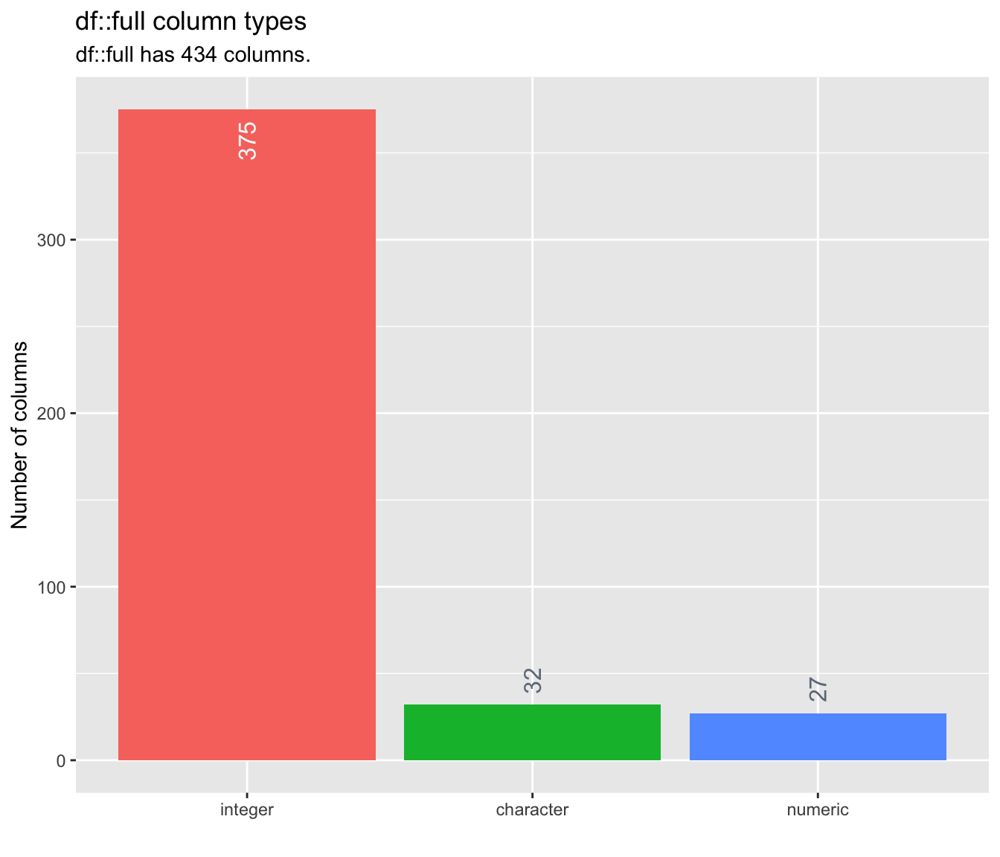
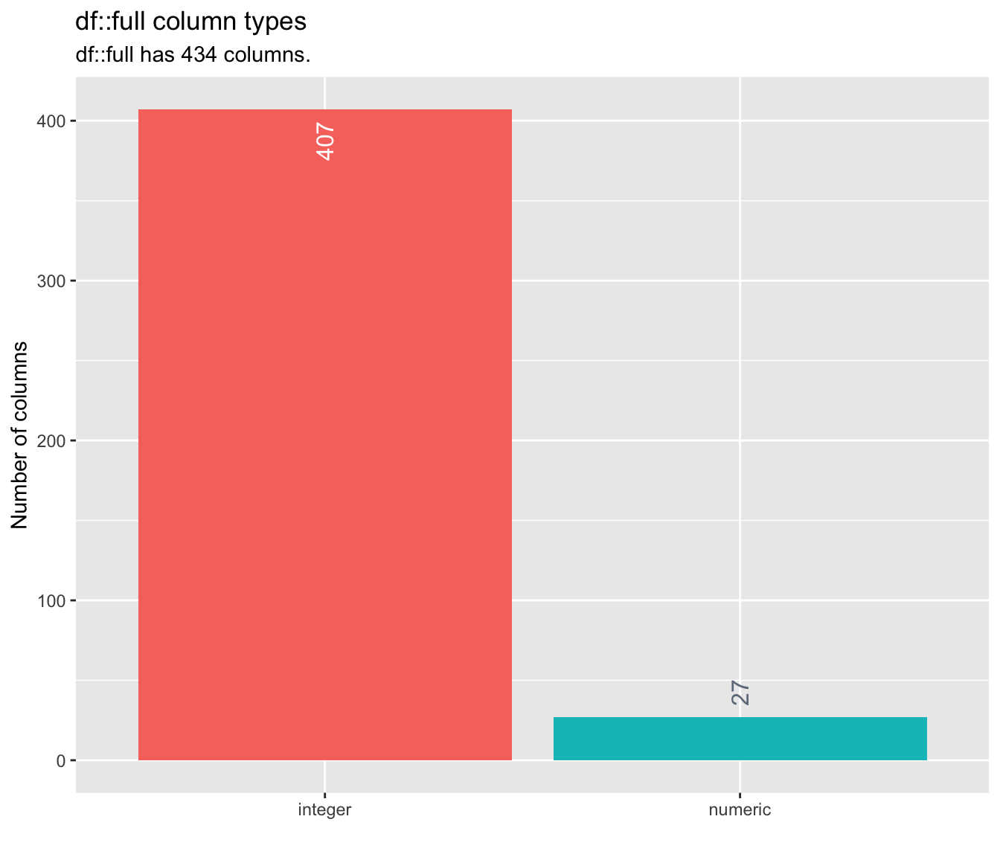

library(rmarkdown)
library(knitr)
library(readr)
library(tidyverse)
library(data.table)
library(MLmetrics)
library(lightgbm)
library(lubridate)
library(plyr)
library(moments)
library(dplyr)
library(rattle)
library(rpart)
library(tictoc)
library(inspectdf)
options(warn=-1)
options(scipen = 99)
#os.environ['KMP_DUPLICATE_LIB_OK']='True'## Error in setwd("/media/kirus/DATA/learn_by_example/Fraud_detection/IEEE-CIS"): cannot change working directorylocal <- TRUE
if(local == TRUE){
train_iden <- fread("dataset/train_identity.csv")
train_trans <- fread("dataset/train_transaction.csv")
test_iden <- fread("dataset/test_identity.csv")
test_trans <- fread("dataset/test_transaction.csv")
} else{
train_iden <- fread("../input/train_identity.csv")
train_trans <- fread("../input/train_transaction.csv")
test_iden <- fread("../input/test_identity.csv")
test_trans <- fread("../input/test_transaction.csv")
}


The training data-set seems to have a lot of missing values.
y_train <- train_trans$isFraud
train_trans$isFraud <- NULL
train <- train_trans %>% left_join(train_iden)## Joining, by = "TransactionID"## Joining, by = "TransactionID"missing_train <- colSums(is.na(train))[colSums(is.na(train)) > 0] %>% sort(decreasing=TRUE)
missing_test <- colSums(is.na(test))[colSums(is.na(test)) > 0] %>% sort(decreasing=TRUE)
head(missing_test)## id_24 id_25 id_26 id_07 id_08 id_21
## 501951 501652 501644 501632 501632 501632# Ratio of missing values
missing_train_pct <- round(missing_train/nrow(train), 2)
missing_test_pct <- round(missing_test/nrow(test), 2)
# drop variable with more than 0.75 of missing values
drop_col_train <- names(missing_train_pct[missing_train_pct > 0.75])
drop_col_test <- names(missing_test_pct[missing_test_pct > 0.75])
all(drop_col_test %in% drop_col_train) # TRUE, it means all drop_col_test are in drop_col_train## [1] TRUE## [1] "D6" "id_13" "V217" "V218" "V219"
## [6] "V223" "V224" "V225" "V226" "V228"
## [11] "V229" "V230" "V231" "V232" "V233"
## [16] "V235" "V236" "V237" "V240" "V241"
## [21] "V242" "V243" "V244" "V246" "V247"
## [26] "V248" "V249" "V252" "V253" "V254"
## [31] "V257" "V258" "V260" "V261" "V262"
## [36] "V263" "V264" "V265" "V266" "V267"
## [41] "V268" "V269" "V273" "V274" "V275"
## [46] "V276" "V277" "V278" "id_05" "id_06"
## [51] "id_20" "id_19" "id_17" "V167" "V168"
## [56] "V172" "V173" "V176" "V177" "V178"
## [61] "V179" "V181" "V182" "V183" "V186"
## [66] "V187" "V190" "V191" "V192" "V193"
## [71] "V196" "V199" "V202" "V203" "V204"
## [76] "V205" "V206" "V207" "V211" "V212"
## [81] "V213" "V214" "V215" "V216" "V169"
## [86] "V170" "V171" "V174" "V175" "V180"
## [91] "V184" "V185" "V188" "V189" "V194"
## [96] "V195" "V197" "V198" "V200" "V201"
## [101] "V208" "V209" "V210" "id_02" "id_11"
## [106] "V220" "V221" "V222" "V227" "V234"
## [111] "V238" "V239" "V245" "V250" "V251"
## [116] "V255" "V256" "V259" "V270" "V271"
## [121] "V272" "id_01" "id_12" "id_15" "id_16"
## [126] "id_23" "id_27" "id_28" "id_29" "id_30"
## [131] "id_31" "id_33" "id_34" "id_35" "id_36"
## [136] "id_37" "id_38" "DeviceType" "DeviceInfo"There is more dropped variables in train dataset that test dataset if we use a rate of 0.75 missed values. All theses listed variables do not have more than rates bigger than 0.75 in test dataset.
# drop variable with more than 0.75 of missing values
drop_col_train <- names(missing_train_pct[missing_train_pct > 0.7])
drop_col_test <- names(missing_test_pct[missing_test_pct > 0.7])
all(drop_col_test %in% drop_col_train) # TRUE, it means all drop_col_test are in drop_col_train## [1] TRUE## character(0)## character(0)When we used a threshold of 0.7, we obtain the same list of variables that we can drop for tarin and test datasets.
## [1] 207## [1] "id_24" "id_25" "id_07" "id_08" "id_21"
## [6] "id_26" "id_22" "dist2" "D7" "id_18"
## [11] "D13" "D14" "D12" "id_03" "id_04"
## [16] "D6" "D8" "D9" "id_09" "id_10"
## [21] "id_32" "id_14" "V138" "V139" "V140"
## [26] "V141" "V142" "V146" "V147" "V148"
## [31] "V149" "V153" "V154" "V155" "V156"
## [36] "V157" "V158" "V161" "V162" "V163"
## [41] "V143" "V144" "V145" "V150" "V151"
## [46] "V152" "V159" "V160" "V164" "V165"
## [51] "V166" "V322" "V323" "V324" "V325"
## [56] "V326" "V327" "V328" "V329" "V330"
## [61] "V331" "V332" "V333" "V334" "V335"
## [66] "V336" "V337" "V338" "V339" "id_13"
## [71] "V217" "V218" "V219" "V223" "V224"
## [76] "V225" "V226" "V228" "V229" "V230"
## [81] "V231" "V232" "V233" "V235" "V236"
## [86] "V237" "V240" "V241" "V242" "V243"
## [91] "V244" "V246" "V247" "V248" "V249"
## [96] "V252" "V253" "V254" "V257" "V258"
## [101] "V260" "V261" "V262" "V263" "V264"
## [106] "V265" "V266" "V267" "V268" "V269"
## [111] "V273" "V274" "V275" "V276" "V277"
## [116] "V278" "id_05" "id_06" "id_20" "id_19"
## [121] "id_17" "V167" "V168" "V172" "V173"
## [126] "V176" "V177" "V178" "V179" "V181"
## [131] "V182" "V183" "V186" "V187" "V190"
## [136] "V191" "V192" "V193" "V196" "V199"
## [141] "V202" "V203" "V204" "V205" "V206"
## [146] "V207" "V211" "V212" "V213" "V214"
## [151] "V215" "V216" "V169" "V170" "V171"
## [156] "V174" "V175" "V180" "V184" "V185"
## [161] "V188" "V189" "V194" "V195" "V197"
## [166] "V198" "V200" "V201" "V208" "V209"
## [171] "V210" "id_02" "id_11" "V220" "V221"
## [176] "V222" "V227" "V234" "V238" "V239"
## [181] "V245" "V250" "V251" "V255" "V256"
## [186] "V259" "V270" "V271" "V272" "id_01"
## [191] "id_12" "id_15" "id_16" "id_23" "id_27"
## [196] "id_28" "id_29" "id_30" "id_31" "id_33"
## [201] "id_34" "id_35" "id_36" "id_37" "id_38"
## [206] "DeviceType" "DeviceInfo"We can optimize missing value rate threshold by training and validation scores.
 There are 399 numeric variables, 32 categorical variables and 3 integer variables. We can reduce memory if we convert numeric variables to integer.
#numeric_vars_stat <- inspect_num(full)
#numeric_vars <- numeric_vars_stat$col_name
#numeric_vars_stat
numeric_vars <- names(full)[sapply(full, class) == "numeric"]library(tictoc)
# If values are integer type, value==floor(value)
is_int <- function(x){
fnum <- fivenum(x)
return(identical(fnum, floor(fnum)))
}
tic("check is integer")
int_idx <- sapply(full[numeric_vars], is_int)
toc()## check is integer: 36.963 sec elapsed#identical(fivenum(full$card2), floor(full$card2))
#is_int(full$card2)
int_vars <- names(int_idx)[int_idx]
paste("Number of numeric variables that we can convert to interger:", length(int_vars))## [1] "Number of numeric variables that we can convert to interger: 372"## [1] "Before : 3620.8 Mb"full[int_vars] <- lapply(full[int_vars], as.integer)
after <- object.size(full)
print(paste("After :", format(after, units = "MB") )) ## [1] "After : 2063.8 Mb"
categorical_vars_stat <- inspect_cat(full)
categorical_vars <- categorical_vars_stat$col_name
categorical_vars_stat ## # A tibble: 32 x 5
## col_name cnt common common_pcnt levels
## <chr> <int> <chr> <dbl> <list>
## 1 card4 5 visa 65.6 <tibble [5 × 3]>
## 2 card6 5 debit 75.2 <tibble [5 × 3]>
## 3 DeviceInfo 2801 <NA> 73.9 <tibble [2,801 × 3]>
## 4 DeviceType 4 <NA> 73.9 <tibble [4 × 3]>
## 5 id_12 3 <NA> 73.9 <tibble [3 × 3]>
## 6 id_15 5 <NA> 73.9 <tibble [5 × 3]>
## 7 id_16 4 <NA> 73.9 <tibble [4 × 3]>
## 8 id_23 5 <NA> 73.9 <tibble [5 × 3]>
## 9 id_27 4 <NA> 73.9 <tibble [4 × 3]>
## 10 id_28 4 <NA> 73.9 <tibble [4 × 3]>
## # … with 22 more rows##
## 1 2
## 506691 590540
data.table::fwrite(full,file = "full.csv")
#full <- fread(file = "full.csv")
full_clean <- full %>%
select(-drop_col_train)
rm(full)
invisible(gc())
dim(full_clean)## [1] 1097231 227X_train <- full_clean[full_clean$key=='2', ] %>% select( -TransactionID)
length(y_train ) == dim(X_train)[1]## [1] TRUELightGBM support by default NA’s values. We can desable this option by use_missing=false.
# Replace NA's by blank
X_train[is.na(X_train)] <- ""
colSums(is.na(X_train))[colSums(is.na(X_train)) > 0] %>% sort(decreasing=TRUE)## named numeric(0)lgb_param <- list(
boosting_type = 'dart',
objective = "binary" ,
metric = "AUC",
boost_from_average = "false",
tree_learner = "serial",
max_depth = -1,
learning_rate = 0.01,
num_leaves = 197,
feature_fraction = 0.3,
bagging_freq = 1,
bagging_fraction = 0.7,
min_data_in_leaf = 100,
bagging_seed = 11,
max_bin = 255)#set.seed(35)
#train.idx <- sample(nrow(X_train), 0.75*nrow(X_train))
# dtrain <- lgb.Dataset(data=as.matrix(X_train[train.idx,]), label=y_train[train.idx], free_raw_data=FALSE)
#
# dvalid <- lgb.Dataset(data=as.matrix(X_train[-train.idx, ]), label=y_train[-train.idx], free_raw_data=FALSE)
#
# invisible(gc())## python: /Users/Mezhoud/venv/bin/python3
## libpython: /Users/Mezhoud/miniconda3/lib/libpython3.7m.dylib
## pythonhome: /Users/Mezhoud/miniconda3:/Users/Mezhoud/miniconda3
## virtualenv: /Users/Mezhoud/venv/bin/activate_this.py
## version: 3.7.1 (default, Dec 14 2018, 13:28:58) [Clang 4.0.1 (tags/RELEASE_401/final)]
## numpy: /Users/Mezhoud/miniconda3/lib/python3.7/site-packages/numpy
## numpy_version: 1.16.4
##
## NOTE: Python version was forced by use_python functiontrain_iden <- fread("dataset/train_identity.csv")
train_trans <- fread("dataset/train_transaction.csv")
train <- train_trans %>% left_join(train_iden)## Joining, by = "TransactionID"## card1 card2 card3 card4 card5 card6
## 1 13926 NA 150 discover 142 credit
## 2 2755 404 150 mastercard 102 credit
## 3 4663 490 150 visa 166 debit
## 4 18132 567 150 mastercard 117 debit
## 5 4497 514 150 mastercard 102 credit
## 6 5937 555 150 visa 226 debit## id_01 id_02 id_03 id_04 id_05 id_06 id_07 id_08 id_09 id_10 id_11
## 1 NA NA NA NA NA NA NA NA NA NA NA
## 2 NA NA NA NA NA NA NA NA NA NA NA
## 3 NA NA NA NA NA NA NA NA NA NA NA
## 4 NA NA NA NA NA NA NA NA NA NA NA
## 5 0 70787 NA NA NA NA NA NA NA NA 100
## 6 NA NA NA NA NA NA NA NA NA NA NA
## id_12 id_13 id_14 id_15 id_16 id_17 id_18 id_19 id_20 id_21 id_22
## 1 <NA> NA NA <NA> <NA> NA NA NA NA NA NA
## 2 <NA> NA NA <NA> <NA> NA NA NA NA NA NA
## 3 <NA> NA NA <NA> <NA> NA NA NA NA NA NA
## 4 <NA> NA NA <NA> <NA> NA NA NA NA NA NA
## 5 NotFound NA -480 New NotFound 166 NA 542 144 NA NA
## 6 <NA> NA NA <NA> <NA> NA NA NA NA NA NA
## id_23 id_24 id_25 id_26 id_27 id_28 id_29 id_30
## 1 <NA> NA NA NA <NA> <NA> <NA> <NA>
## 2 <NA> NA NA NA <NA> <NA> <NA> <NA>
## 3 <NA> NA NA NA <NA> <NA> <NA> <NA>
## 4 <NA> NA NA NA <NA> <NA> <NA> <NA>
## 5 NA NA NA New NotFound Android 7.0
## 6 <NA> NA NA NA <NA> <NA> <NA> <NA>
## id_31 id_32 id_33 id_34 id_35 id_36 id_37
## 1 <NA> NA <NA> <NA> <NA> <NA> <NA>
## 2 <NA> NA <NA> <NA> <NA> <NA> <NA>
## 3 <NA> NA <NA> <NA> <NA> <NA> <NA>
## 4 <NA> NA <NA> <NA> <NA> <NA> <NA>
## 5 samsung browser 6.2 32 2220x1080 match_status:2 T F T
## 6 <NA> NA <NA> <NA> <NA> <NA> <NA>
## id_38 DeviceType DeviceInfo
## 1 <NA> <NA> <NA>
## 2 <NA> <NA> <NA>
## 3 <NA> <NA> <NA>
## 4 <NA> <NA> <NA>
## 5 T mobile SAMSUNG SM-G892A Build/NRD90M
## 6 <NA> <NA> <NA>## Observations: 5,000
## Variables: 6
## $ card1 <int> 13926, 2755, 4663, 18132, 4497, 5937, 12308, 12695, 2803, …
## $ card2 <dbl> NA, 404, 490, 567, 514, 555, 360, 490, 100, 111, 352, 375,…
## $ card3 <dbl> 150, 150, 150, 150, 150, 150, 150, 150, 150, 150, 117, 185…
## $ card4 <chr> "discover", "mastercard", "visa", "mastercard", "mastercar…
## $ card5 <dbl> 142, 102, 166, 117, 102, 226, 166, 226, 226, 224, 134, 224…
## $ card6 <chr> "credit", "credit", "debit", "debit", "credit", "debit", "…## Observations: 5,000
## Variables: 40
## $ id_01 <dbl> NA, NA, NA, NA, 0, NA, NA, NA, -5, NA, -5, -5, NA, NA…
## $ id_02 <dbl> NA, NA, NA, NA, 70787, NA, NA, NA, 98945, NA, 191631,…
## $ id_03 <dbl> NA, NA, NA, NA, NA, NA, NA, NA, NA, NA, 0, NA, NA, NA…
## $ id_04 <dbl> NA, NA, NA, NA, NA, NA, NA, NA, NA, NA, 0, NA, NA, NA…
## $ id_05 <dbl> NA, NA, NA, NA, NA, NA, NA, NA, 0, NA, 0, 0, NA, NA, …
## $ id_06 <dbl> NA, NA, NA, NA, NA, NA, NA, NA, -5, NA, 0, -6, NA, NA…
## $ id_07 <dbl> NA, NA, NA, NA, NA, NA, NA, NA, NA, NA, NA, NA, NA, N…
## $ id_08 <dbl> NA, NA, NA, NA, NA, NA, NA, NA, NA, NA, NA, NA, NA, N…
## $ id_09 <dbl> NA, NA, NA, NA, NA, NA, NA, NA, NA, NA, 0, NA, NA, NA…
## $ id_10 <dbl> NA, NA, NA, NA, NA, NA, NA, NA, NA, NA, 0, NA, NA, NA…
## $ id_11 <dbl> NA, NA, NA, NA, 100, NA, NA, NA, 100, NA, 100, 100, N…
## $ id_12 <chr> NA, NA, NA, NA, "NotFound", NA, NA, NA, "NotFound", N…
## $ id_13 <dbl> NA, NA, NA, NA, NA, NA, NA, NA, 49, NA, 52, 52, NA, N…
## $ id_14 <dbl> NA, NA, NA, NA, -480, NA, NA, NA, -300, NA, NA, NA, N…
## $ id_15 <chr> NA, NA, NA, NA, "New", NA, NA, NA, "New", NA, "Found"…
## $ id_16 <chr> NA, NA, NA, NA, "NotFound", NA, NA, NA, "NotFound", N…
## $ id_17 <dbl> NA, NA, NA, NA, 166, NA, NA, NA, 166, NA, 121, 225, N…
## $ id_18 <dbl> NA, NA, NA, NA, NA, NA, NA, NA, NA, NA, NA, NA, NA, N…
## $ id_19 <dbl> NA, NA, NA, NA, 542, NA, NA, NA, 621, NA, 410, 176, N…
## $ id_20 <dbl> NA, NA, NA, NA, 144, NA, NA, NA, 500, NA, 142, 507, N…
## $ id_21 <dbl> NA, NA, NA, NA, NA, NA, NA, NA, NA, NA, NA, NA, NA, N…
## $ id_22 <dbl> NA, NA, NA, NA, NA, NA, NA, NA, NA, NA, NA, NA, NA, N…
## $ id_23 <chr> NA, NA, NA, NA, "", NA, NA, NA, "", NA, "", "", NA, N…
## $ id_24 <dbl> NA, NA, NA, NA, NA, NA, NA, NA, NA, NA, NA, NA, NA, N…
## $ id_25 <dbl> NA, NA, NA, NA, NA, NA, NA, NA, NA, NA, NA, NA, NA, N…
## $ id_26 <dbl> NA, NA, NA, NA, NA, NA, NA, NA, NA, NA, NA, NA, NA, N…
## $ id_27 <chr> NA, NA, NA, NA, "", NA, NA, NA, "", NA, "", "", NA, N…
## $ id_28 <chr> NA, NA, NA, NA, "New", NA, NA, NA, "New", NA, "Found"…
## $ id_29 <chr> NA, NA, NA, NA, "NotFound", NA, NA, NA, "NotFound", N…
## $ id_30 <chr> NA, NA, NA, NA, "Android 7.0", NA, NA, NA, "iOS 11.1.…
## $ id_31 <chr> NA, NA, NA, NA, "samsung browser 6.2", NA, NA, NA, "m…
## $ id_32 <dbl> NA, NA, NA, NA, 32, NA, NA, NA, 32, NA, NA, NA, NA, N…
## $ id_33 <chr> NA, NA, NA, NA, "2220x1080", NA, NA, NA, "1334x750", …
## $ id_34 <chr> NA, NA, NA, NA, "match_status:2", NA, NA, NA, "match_…
## $ id_35 <chr> NA, NA, NA, NA, "T", NA, NA, NA, "T", NA, "F", "F", N…
## $ id_36 <chr> NA, NA, NA, NA, "F", NA, NA, NA, "F", NA, "F", "F", N…
## $ id_37 <chr> NA, NA, NA, NA, "T", NA, NA, NA, "F", NA, "T", "T", N…
## $ id_38 <chr> NA, NA, NA, NA, "T", NA, NA, NA, "T", NA, "T", "T", N…
## $ DeviceType <chr> NA, NA, NA, NA, "mobile", NA, NA, NA, "mobile", NA, "…
## $ DeviceInfo <chr> NA, NA, NA, NA, "SAMSUNG SM-G892A Build/NRD90M", NA, …## # A tibble: 6 x 3
## col_name cnt pcnt
## <chr> <int> <dbl>
## 1 card2 75 1.5
## 2 card5 9 0.18
## 3 card1 0 0
## 4 card3 0 0
## 5 card4 0 0
## 6 card6 0 0## # A tibble: 40 x 3
## col_name cnt pcnt
## <chr> <int> <dbl>
## 1 id_24 4968 99.4
## 2 id_07 4967 99.3
## 3 id_08 4967 99.3
## 4 id_21 4967 99.3
## 5 id_22 4967 99.3
## 6 id_25 4967 99.3
## 7 id_26 4967 99.3
## 8 id_18 4718 94.4
## 9 id_03 4578 91.6
## 10 id_04 4578 91.6
## # … with 30 more rows## card1 card2 card3 card4
## Min. : 1033 Min. :100.0 Min. :100.0 Length:5000
## 1st Qu.: 6459 1st Qu.:194.0 1st Qu.:150.0 Class :character
## Median : 9335 Median :321.0 Median :150.0 Mode :character
## Mean : 9737 Mean :346.5 Mean :152.3
## 3rd Qu.:13481 3rd Qu.:500.0 3rd Qu.:150.0
## Max. :18390 Max. :600.0 Max. :191.0
## NA's :75
## card5 card6
## Min. :100 Length:5000
## 1st Qu.:166 Class :character
## Median :224 Mode :character
## Mean :200
## 3rd Qu.:226
## Max. :237
## NA's :9Card1, 4 and 6 do not have a missing values. Card 4 and 6 are character and card 1 is numeric.
## card1 card2 card3 card4
## Min. : 1033 Min. : 0.0 Min. :100.0 Length:5000
## 1st Qu.: 6459 1st Qu.:194.0 1st Qu.:150.0 Class :character
## Median : 9335 Median :321.0 Median :150.0 Mode :character
## Mean : 9737 Mean :341.3 Mean :152.3
## 3rd Qu.:13481 3rd Qu.:494.0 3rd Qu.:150.0
## Max. :18390 Max. :600.0 Max. :191.0
## card5 card6
## Min. : 0.0 Length:5000
## 1st Qu.:166.0 Class :character
## Median :224.0 Mode :character
## Mean :199.7
## 3rd Qu.:226.0
## Max. :237.0isFraud transaction train_5000 %>%
select(card_hash, device_hash, isFraud) %>%
group_by( card_hash, device_hash, isFraud) %>%
add_tally() %>%
filter(isFraud == 1) %>%
distinct() %>%
count("device_hash") %>%
arrange(desc(freq))## device_hash freq
## 1 b0eec9231ae82c7 43
## 2 b40c174a01697ba 8
## 3 1bd5a7c38756eb4 4
## 4 d524c1a0811da49 4
## 5 ad0380c681c6f29 3
## 6 68693d02ab4fbb2 2
## 7 8645585e38a597c 2
## 8 d1ed60daba157ae 2
## 9 a5580d69ef89536 1
## 10 c3a1e3691b7af20 1
## 11 d2ad3adab1c84ef 1 train_5000 %>%
select(card_hash, device_hash, isFraud) %>%
group_by( card_hash, device_hash, isFraud) %>%
add_tally() %>%
filter(isFraud == 1) %>%
distinct() %>%
count("card_hash") %>%
arrange(desc(freq))## card_hash freq
## 1 73d559ba355793c 2
## 2 ba335500048094d 2
## 3 c8e2247b6b1dd70 2
## 4 d33188e37e3cbde 2
## 5 e5218c4a6ba6b0d 2
## 6 02089e4201c478a 1
## 7 046089c4e6ece42 1
## 8 04880baba35b945 1
## 9 09a90b8bd21f5f0 1
## 10 0cac5612d2f3305 1
## 11 12e54d765cf4f88 1
## 12 179c088a27a4312 1
## 13 18122e9b2c8a47f 1
## 14 196fc3b72f0cf45 1
## 15 270fe39b31404fb 1
## 16 2911521a2650174 1
## 17 2963f1130483f86 1
## 18 2db26f3fccaeb06 1
## 19 354027dc5af1138 1
## 20 355b405219be922 1
## 21 3dcac3668b3812d 1
## 22 41e70506bdbc666 1
## 23 448155c2c23e3d2 1
## 24 48e958b429f3a7c 1
## 25 4d7e2f6c08a5805 1
## 26 53be1a94a5a5750 1
## 27 543212993b885f8 1
## 28 56210b84c6eeb06 1
## 29 5ab407639145b99 1
## 30 697e04bfea34575 1
## 31 6f473e021469c90 1
## 32 74a6fdb87df1bf9 1
## 33 7f6cbfe70bade06 1
## 34 7f985ed6bafd564 1
## 35 81e55ba2fb9c7f5 1
## 36 82da7cb095aad12 1
## 37 832c88c03f01511 1
## 38 8c1479ec0bda456 1
## 39 9a0e5a6e6dd9a21 1
## 40 9a461887c830051 1
## 41 9de338acc31c454 1
## 42 a0b81fd3bc73509 1
## 43 a2271484fc98d37 1
## 44 a46fd032bdebece 1
## 45 a52b14cd71a5329 1
## 46 a7ef1b6a8a0258e 1
## 47 b3926b2c86a782f 1
## 48 b72993e4926ae45 1
## 49 bbdccfb754b3c0c 1
## 50 be9b8946d6b309a 1
## 51 c3a98cc10558651 1
## 52 c8138c8d90570bf 1
## 53 ccd711d9a56bbb9 1
## 54 d2c3243d549807e 1
## 55 d2ca229767cb03d 1
## 56 d90a14c4d36ab75 1
## 57 dbb434897c459e9 1
## 58 dd6c6e6c88e4d79 1
## 59 e3bc3cc98381725 1
## 60 e7cb958bc9fcdbe 1
## 61 e9c8b964d4806b3 1
## 62 f137006a8f5170a 1
## 63 f2c3c2de908a477 1
## 64 f8360028f0c401d 1
## 65 f9f318efd5e4511 1
## 66 fe826cddbef2752 1